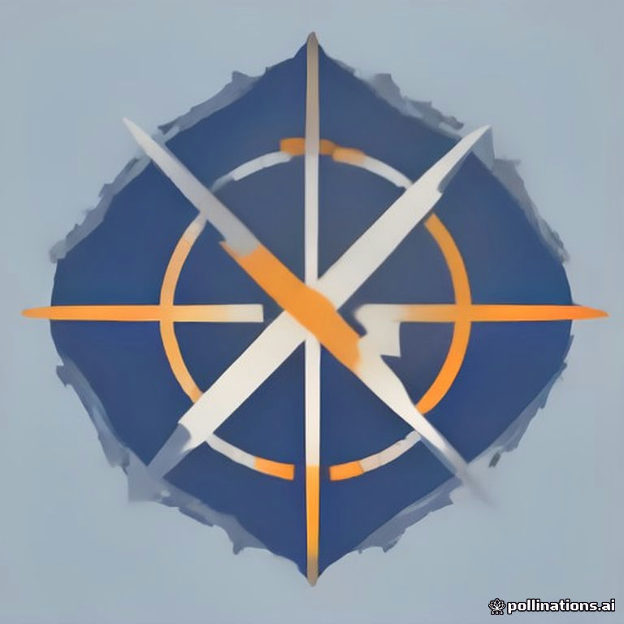
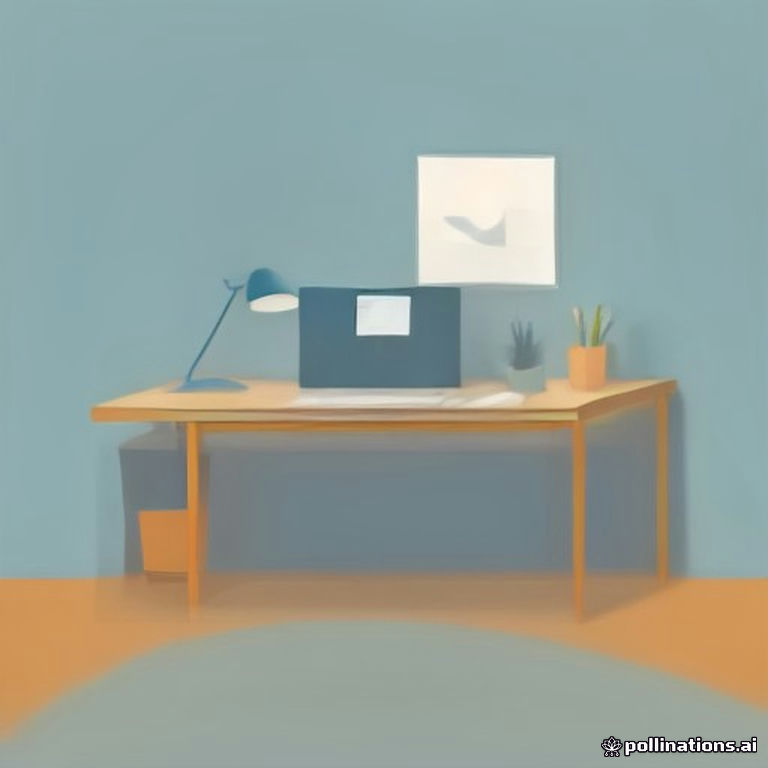
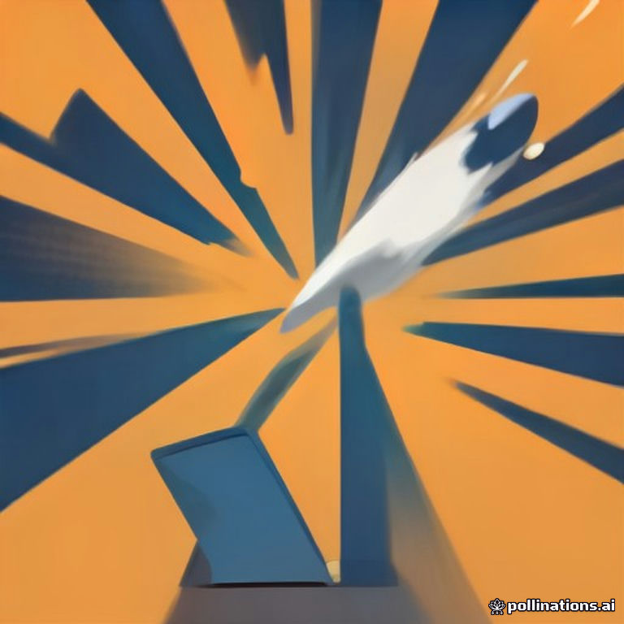

画像生成AIの仕事利用テスト：資料・SNS・ロゴ案で使えた／使えなかった例
#PR 開示：この記事にはアフィリエイトリンクは含まれていません。紹介する3サービスはいずれも無料枠での検証です。Pollinations.aiの画像は実際に生成した実物を掲載しています。ChatGPTとMicrosoft Copilotは、ログインなしでは画像生成を試すことができませんでした（性能の評価ではなく、試せた範囲の報告です）。
結論
結論：ログインなしで画像生成を試すなら、Pollinations.aiの無料枠が今回の条件では唯一の選択肢でした。ロゴ案・資料挿絵・SNS画像の3課題すべてを、1枚あたり約5〜6秒で生成できました。ただし無料枠には「45秒に1枚まで」「右下に透かしが入る」「サイズは768px」の3つの条件があります。ChatGPTはゲスト利用では画像生成がログイン必須、Microsoft Copilotはログインなしでは入力欄すら表示されませんでした。
3サービスの結果まとめ
| 比べる点 | Pollinations.ai | ChatGPT（ゲスト利用） | Microsoft Copilot |
|---|---|---|---|
| ログインなしで試せたか | 試せた（アカウント不要） | 試せなかった（画像生成はログイン必須） | 試せなかった（入力欄なし） |
| 生成できた枚数 | 3枚（ロゴ案・資料挿絵・SNS画像） | 0枚 | 0枚 |
| 生成時間 | 1枚あたり約5〜6秒 | — | — |
| 無料枠の制限 | IPあたり45秒に1枚まで。連続で頼むとエラー | — | — |
| 画像サイズ | 1024pxで頼んだが768×768pxで返ってきた | — | — |
| 透かし | 右下に「pollinations.ai」が入る（消す設定でも消えず） | — | — |
Pollinations.aiで実際に作った3枚
Pollinations.aiは、URLに作りたい絵の説明（プロンプト）を入れて開くだけで画像が返ってきます。アカウント作成も課金もありません。今回は3つの仕事の場面を想定して、同じ条件で3枚を生成しました。生成時間は1枚あたり約5〜6秒でしたが、無料枠の「45秒に1枚」の制限があるため、3枚の生成には待ち時間込みで約2分かかりました。
① ロゴ案：アイデア出しまで

minimalist flat vector logo, lightning bolt and wrench, navy blue and orange, white background, simple clean design, no text紺×オレンジのコンパス風デザインにはなったが、クリーンなベクターロゴではない。「白背景」と頼んだのに灰青の背景になった。最終ロゴとしては使えず、「アイデア出し」まで。
② 資料挿絵：そのまま使える出来

flat vector illustration of a tidy office desk with laptop, notebook and coffee cup, soft blue and orange palette, clean minimal style, no textデスク・ノートPC・ランプ・観葉植物の落ち着いたイラスト。社内資料の挿絵としてはそのまま使える出来。壁の額縁の中身が空っぽなのはご愛敬。
③ SNS画像：サムネイル素材として使える出来

vibrant flat illustration of a small rocket launching from an open laptop, orange and navy blue, energetic social media thumbnail style, no textノートPCからロケットが飛び出すダイナミックな構図。オレンジ×紺で目立つ。SNSのサムネイル素材として使える出来。
無料枠の落とし穴：透かし・サイズ・制限
社外に出す資料に使う前に確認すること：生成した3枚すべてに、右下に小さく「pollinations.ai」の透かし（ウォーターマーク）が入ります。透かしを消す設定（nologo=true）を付けて生成しましたが、消えませんでした。透かしの扱いや商用利用の条件は、公式の利用条件で確認してください。この記事では確認していないため断定しません。
- 45秒に1枚まで：無料枠はIPアドレスあたり45秒に1枚の制限があります。連続で3枚頼んだところ、2枚目で
402 FREE_LIMITのエラーが出ました。45秒待って再試行したら生成できました。まとめて何十枚も作る用途には向きません。 - サイズは768px：1024×1024で頼みましたが、返ってきたのは768×768のJPEGでした。大きな印刷物や高解像度が必要な用途には足りません。SNSや資料の挿絵なら十分なサイズです。
- 文字は入れないほうがいい：今回は3枚とも「no text」で生成しました。画像生成AIは文字の描画が苦手で、文字を入れると崩れることが多いためです。文字はあとから別のツールで入れるのが無難です。
ChatGPTとCopilotはなぜ試せなかったか
ChatGPTはゲスト利用（ログインなし）でテキストチャットは送れましたが、画像生成の指示を送ると「Creating image」と表示されたあと、「Log in to create or edit images for free」「Image creation is only available when you're logged in.」というログイン案内カードが表示され、画像は1枚も生成されませんでした。Microsoft Copilotは、ログインなしではチャットの入力欄自体が表示されず、「Sign into Copilot」とだけ出てきました。「Go to Chat」も「Create an image」もMicrosoftアカウントのサインイン画面に移動し、指示自体を送れませんでした。どちらもログインはしていません。
これは「性能が悪い」という話ではありません。ログインできる人なら、ChatGPTもCopilotも画像生成は使えるはずです。今回の条件は「ログインなしで試せるか」だった、というだけの話です。関連する過去の検証も同じ考え方です（Day9：検索AI比較ではChatGPTゲスト利用だけが正解＋出典付きで答えられました）。
判定
資料の挿絵とSNSのサムネイル素材なら、ログイン不要のPollinations.aiで十分に使えます。1枚5〜6秒、無料、アカウント不要。ただし透かしあり・768px・45秒に1枚、の3条件付きです。ロゴは「案出し」まで。最終ロゴはデザイナーか有料ツールで仕上げるのが正解です。ChatGPTとCopilotの画像生成は、ログインできる人なら別枠で試す価値があります。ログインなしでは試せませんでした。
注記
- 実測の範囲：Pollinations.aiの3枚は2026-11-28にVMからAPI経由で実際に生成し、目視で確認したものです。生成時間・サイズ・制限の数字はこの日の実測です。無料枠の条件は変わることがあります。
- 透かしの商用利用条件：公式の利用条件はこの記事では確認していません。社外に出す資料に使う場合は、必ず公式の条件を確認してください。
- ChatGPT・Copilotの評価：ログインなしでは画像生成を試せなかったため、画質や性能の評価はしていません。「使えなかった」のではなく「この条件では試せなかった」という報告です。
- プロンプトは英語で：今回は英語のプロンプトで生成しました。日本語のプロンプトでも生成できますが、英語のほうが意図どおりの絵になりやすい傾向があります（今回の検証では日本語プロンプトの比較はしていません）。